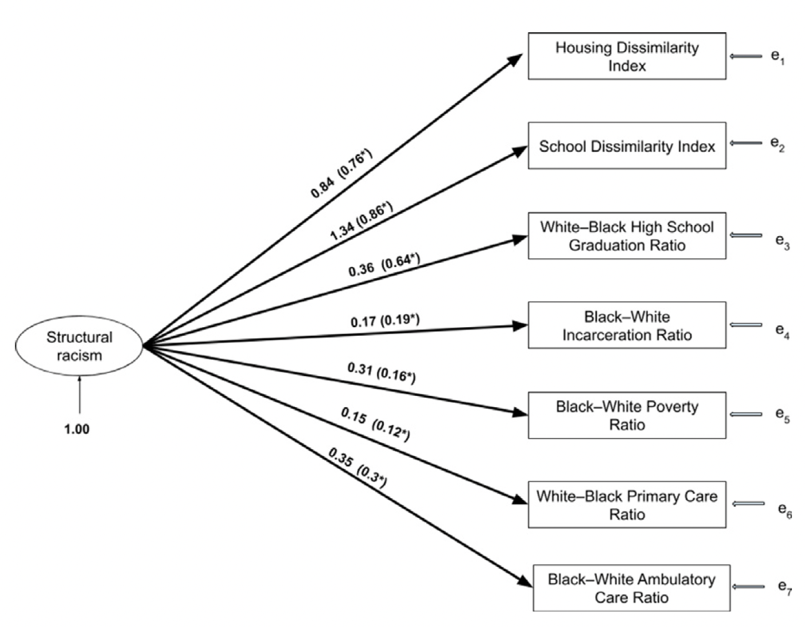

A growing public conversation recognizes that individual health and collective health of populations is determined by a range of factors, including many that are social and rooted in social relationships. As this conversation grows and evolves, planners have an important role to play helping to disentangle and describe how places matter and influence the health of populations.
This week, we will explore a case study strategy for linking social determinants measures rooted in neighborhood indicators with measures of health outcomes. Rather than focus on building out new methodological or analytical techniques, our focus this week will be on storytelling and in thinking about how to engage communities in further conversations about their health and wellbeing.
Goals
Think critically about how to translate conceptual arguments and data into coherent stories.
Let’s get going…
Github Lab Repository
If you have not already done so, follow this link to accept the lab Github Classroom assignment repository.
Conceptualizing Structural Racism at the Neighborhood Level
Reading Dougherty, et al. (2020), we get a very nice and compact understanding of how a complex theoretical concept like structural racism has been measured in the past, and how specifically these measures have been applied to understanding outcomes related to health:
Structural racism is frequently thought of as a construct involving discriminatory practices or racial inequities in multiple domains, often including housing, education, health, criminal justice, and employment. To date, research on adiposity has focused on individual components of structural racism rather than on measures that account for the complex, multidimensional nature of structural racism.
The paper then goes on to itemize five domains of structural racism measured in the literature:
Housing
Education
Employment
Health Care
Criminal Justice
Part of the argument being made here is that while other research may have focused on one of these domains or a single measure proxying structural racism that the approach adopted by the authors involves thinking about structural racism as being multidimensional in nature with multiple overlapping domains that need to be measured at the same time.
At this point in our class, this observation and approach should sound pretty familiar - we’ve learned how to construct multidimensional measures of neighborhood conditions in some of our prior labs, just with other conceptual frameworks and measures proxying things other than structural racism.
Keeping our approach to these other neighborhood-level indexes will be important for thinking about how we might approach creating a tract-level multidimensional index of structural racism. Let’s think a bit about how we might adapt Dougherty’s methods to operationalize structural racism at the neighborhood level.
Operationalizing Structural Racism at the Neighborhrood Level
The Dougherty Appendix document describes how a range of candidate indicators were selected to proxy five conceptual domains of structural racism and then confirmatory factor analysis was used to identify the strongest indicators across each domain:

We can turn to the methods section of the Dougherty paper to think more about how to operationalize structural racism at the neighborhood level:
Multiple indicators of differential treatment by race were evaluated, with modeling diagnostics guiding selection of the most informative indicators. These indicators with few exceptions, are prevalence ratios… Derivation of the CSR scale relied primarily on U.S. Census Bureau survey data and community-level data collected for administrative reasons.
In this passage, the authors describe prevalence ratios as follows: \[P_{w=1} / P_{b=1}\] where \[P_{w=1}\] is the proportion of whites in a county experiencing an event and \[P_{b=1}\] is the proportion of blacks in a county experiencing the event.
While the authors focus on calculating these ratios across five domains at the county level, we will think about how to construct several domains at the census tract level to proxy neighborhood-level structural racism.
To keep things simple for the purpose of our lab, we are going to focus on calculating a few measures from ACS data only. Dougherty relies upon a range of other administrative data sources, and if we were going to develop a fully-functioning neighborhood structural racism scale, we would need to think about developing appropriate proxies for all dimensions at the neighborhood level.
We will focus on translating proxies for housing, education, employment to the tract level.
Housing
Dougherty’s housing measures tend to focus on measuring dimensions of segregation and spatial unevenness at the county level. While we might be able to construct similar measures of segregation at the tract level, we will instead employ a simple measure of differences in housing tenure (owned versus rented) by race.
ACS Table B25003A and B25003B contain data on tenure for white and black heads of household. We will use these to calculate prevalence ratios:
For education, let’s look at the proportion of adults over age 25 who have not completed a high school education (or equivalent). As with our prior measures, we’ll calculate the prevalence ratio of white to black adults with no high school degree using data from tables C15002H and C15002B.
Now that we have specific data on three tract-level measures of structural racism for the Detroit metropolitan area, let’s connect these data to information on health outcomes.
Identifying a Connection to Health Outcomes
We are going to draw information on health outcomes from the U.S. Center for Disease Control’s PLACES dataset. Specifically, we’ll use the 2022 PLACES tract-level dataset. Let’s download and prepare those data for joining to our tract-level prevalence ratios:
Rows: 2161543 Columns: 23
── Column specification ────────────────────────────────────────────────────────
Delimiter: ","
chr (16): StateAbbr, StateDesc, CountyName, CountyFIPS, LocationName, DataSo...
dbl (5): Year, Data_Value, Low_Confidence_Limit, High_Confidence_Limit, Tot...
lgl (2): Data_Value_Footnote_Symbol, Data_Value_Footnote
ℹ Use `spec()` to retrieve the full column specification for this data.
ℹ Specify the column types or set `show_col_types = FALSE` to quiet this message.
What I did here was to download these data as a .csv directly from the PLACES website into our R session using read_csv(). Because the data are in a tidy format, I use pivot_wider() to convert from one row per observation to one row per census tract for all indicators.
The dataset also has fairly good definitions present for each of the health indicators. Here’s a table summarizing them for you (this will be important as you get into the work of this lab):
Chronic obstructive pulmonary disease among adults aged >=18 years
Crude prevalence
%
OBESITY
Obesity among adults aged >=18 years
Crude prevalence
%
STROKE
Stroke among adults aged >=18 years
Crude prevalence
%
DEPRESSION
Depression among adults aged >=18 years
Crude prevalence
%
LPA
No leisure-time physical activity among adults aged >=18 years
Crude prevalence
%
CASTHMA
Current asthma among adults aged >=18 years
Crude prevalence
%
MAMMOUSE
Mammography use among women aged 50-74 years
Crude prevalence
%
TEETHLOST
All teeth lost among adults aged >=65 years
Crude prevalence
%
ARTHRITIS
Arthritis among adults aged >=18 years
Crude prevalence
%
COREM
Older adult men aged >=65 years who are up to date on a core set of clinical preventive services: Flu shot past year, PPV shot ever, Colorectal cancer screening
Crude prevalence
%
DIABETES
Diagnosed diabetes among adults aged >=18 years
Crude prevalence
%
BINGE
Binge drinking among adults aged >=18 years
Crude prevalence
%
SLEEP
Sleeping less than 7 hours among adults aged >=18 years
Crude prevalence
%
ACCESS2
Current lack of health insurance among adults aged 18-64 years
Crude prevalence
%
BPMED
Taking medicine for high blood pressure control among adults aged >=18 years with high blood pressure
Crude prevalence
%
PHLTH
Physical health not good for >=14 days among adults aged >=18 years
Crude prevalence
%
DENTAL
Visits to dentist or dental clinic among adults aged >=18 years
Crude prevalence
%
MHLTH
Mental health not good for >=14 days among adults aged >=18 years
Crude prevalence
%
BPHIGH
High blood pressure among adults aged >=18 years
Crude prevalence
%
CANCER
Cancer (excluding skin cancer) among adults aged >=18 years
Crude prevalence
%
CHOLSCREEN
Cholesterol screening among adults aged >=18 years
Crude prevalence
%
CHD
Coronary heart disease among adults aged >=18 years
Crude prevalence
%
GHLTH
Fair or poor self-rated health status among adults aged >=18 years
Crude prevalence
%
CHECKUP
Visits to doctor for routine checkup within the past year among adults aged >=18 years
Crude prevalence
%
CSMOKING
Current smoking among adults aged >=18 years
Crude prevalence
%
CERVICAL
Cervical cancer screening among adult women aged 21-65 years
Crude prevalence
%
KIDNEY
Chronic kidney disease among adults aged >=18 years
Crude prevalence
%
HIGHCHOL
High cholesterol among adults aged >=18 years who have been screened in the past 5 years
Crude prevalence
%
COLON_SCREEN
Fecal occult blood test, sigmoidoscopy, or colonoscopy among adults aged 50-75 years
Crude prevalence
%
COREW
Older adult women aged >=65 years who are up to date on a core set of clinical preventive services: Flu shot past year, PPV shot ever, Colorectal cancer screening, and Mammogram past 2 years
Crude prevalence
%
You can also find definitions by category from the CDC here.
Finally, we’ll join to our detroit data so that we have a dataset consisting of data for the Detroit metro area that includes our prevalence measures as well as health behaviors and outcomes as proxied by the CDC data.
Code
detroit <-left_join(detroit, cdc_places1, by=c("GEOID"="LocationName"))
Categorizing Structural Racism by Tracts
We are getting close to being able to do some storytelling! In order to make it easier to tell stories from our Detroit metro dataset, let’s categorize census tracts based upon the prevalence ratios related to housing, education, and employment. To keep things simple, we’ll find the percentile rank associated with each observation, and then label the values below or equal to 25% “Low”, the values between 25% and 75% “Moderate”, and the values above 75% “High”. Keep in mind that we haven’t scaled or reversed our prevalence ratios - this will be important when you attempt to interpret what Low, Moderate, or High ratios might mean.
In our class session, split into three groups. Each group will focus on one dimension of structural racism (housing, education, employment). Working in your group, explore the relationship between your structural racism domain and the CDC health outcomes.
To get you started, I’ve prepared a summary table for each domain. Recall that the Low, Moderate, and High are categorical splits of the prevalence ratios based upon their distribution in the data. The values for each of the indicators are typically the percentage of individuals experiencing that condition at the tract level.
Articulate what a low, moderate, or high prevalence ratio means based upon the structural racism indicator you’re looking at.
Referring to CDC’s measure definitions, identify one health outcome, health risk behavior, prevention indicator, and health status indicator, and focus on telling a story about the Detroit region relating your four health indicators back to your assigned structural racism indicator.
Develop one (or more) key visuals that help to substantiate your story. Prepare to share this key visual during the last 15 minutes of class.
Identify key questions and next steps to take based upon the story and evidence you’ve analyzed.
Your group will present your narrative at the end of our class session. After class, please complete your lab reflection and push this to Github. There will be no other lab content or work for this week other than completing your own individual reflection on what we’ve done in small groups in class.
References
Source Code
---title: "Health Equity"sidebar: falsetoc: truetoc-depth: 4page-layout: fullbibliography: ../references.bibcsl: ../apa-6th-edition.cslformat: html: code-fold: show code-overflow: wrap code-tools: source: true toggle: false caption: nonefig-responsive: trueeditor: visual---## IntroductionA growing public conversation recognizes that individual health and collective health of populations is determined by a range of factors, including many that are social and rooted in social relationships. As this conversation grows and evolves, planners have an important role to play helping to disentangle and describe how places matter and influence the health of populations.This week, we will explore a case study strategy for linking social determinants measures rooted in neighborhood indicators with measures of health outcomes. Rather than focus on building out new methodological or analytical techniques, our focus this week will be on storytelling and in thinking about how to engage communities in further conversations about their health and wellbeing.## Goals- Think critically about how to translate conceptual arguments and data into coherent stories.Let's get going...## Github Lab RepositoryIf you have not already done so, follow [this link]() to accept the lab Github Classroom assignment repository.```{r}#| include: false#| warning: false#| message: falselibrary(tidyverse)library(tidycensus)library(gt)```## Conceptualizing Structural Racism at the Neighborhood LevelReading Dougherty, et al. (2020), we get a very nice and compact understanding of how a complex theoretical concept like structural racism has been measured in the past, and how specifically these measures have been applied to understanding outcomes related to health:> Structural racism is frequently thought of as a construct involving discriminatory practices or racial inequities in multiple domains, often including housing, education, health, criminal justice, and employment. To date, research on adiposity has focused on individual components of structural racism rather than on measures that account for the complex, multidimensional nature of structural racism.The paper then goes on to itemize five domains of structural racism measured in the literature:1. Housing2. Education3. Employment4. Health Care5. Criminal JusticePart of the argument being made here is that while other research may have focused on one of these domains or a single measure proxying structural racism that the approach adopted by the authors involves thinking about structural racism as being *multidimensional* in nature with multiple overlapping domains that need to be measured at the same time.At this point in our class, this observation and approach should sound pretty familiar - we've learned how to construct multidimensional measures of neighborhood conditions in some of our prior labs, just with other conceptual frameworks and measures proxying things other than structural racism.Keeping our approach to these other neighborhood-level indexes will be important for thinking about how we might approach creating a tract-level multidimensional index of structural racism. Let's think a bit about how we might adapt Dougherty's methods to operationalize structural racism at the neighborhood level.## Operationalizing Structural Racism at the Neighborhrood LevelThe Dougherty Appendix document describes how a range of candidate indicators were selected to proxy five conceptual domains of structural racism and then confirmatory factor analysis was used to identify the strongest indicators across each domain:We can turn to the methods section of the Dougherty paper to think more about how to operationalize structural racism at the neighborhood level:> Multiple indicators of differential treatment by race were evaluated, with modeling diagnostics guiding selection of the most informative indicators. These indicators with few exceptions, are prevalence ratios... Derivation of the CSR scale relied primarily on U.S. Census Bureau survey data and community-level data collected for administrative reasons.In this passage, the authors describe prevalence ratios as follows: $$P_{w=1} / P_{b=1}$$ where $$P_{w=1}$$ is the proportion of whites in a county experiencing an event and $$P_{b=1}$$ is the proportion of blacks in a county experiencing the event.While the authors focus on calculating these ratios across five domains at the county level, we will think about how to construct several domains at the census tract level to proxy neighborhood-level structural racism.To keep things simple for the purpose of our lab, we are going to focus on calculating a few measures from ACS data only. Dougherty relies upon a range of other administrative data sources, and if we were going to develop a fully-functioning neighborhood structural racism scale, we would need to think about developing appropriate proxies for all dimensions at the neighborhood level.We will focus on translating proxies for housing, education, employment to the tract level.### HousingDougherty's housing measures tend to focus on measuring dimensions of segregation and spatial unevenness at the county level. While we might be able to construct similar measures of segregation at the tract level, we will instead employ a simple measure of differences in housing tenure (owned versus rented) by race.ACS Table [B25003A](https://data.census.gov/table?q=tenure+by+race&d=ACS+5-Year+Estimates+Detailed+Tables&tid=ACSDT5Y2021.B25003A) and [B25003B](https://data.census.gov/table?q=tenure+by+race&d=ACS+5-Year+Estimates+Detailed+Tables&tid=ACSDT5Y2021.B25003B) contain data on tenure for white and black heads of household. We will use these to calculate prevalence ratios:```{r}acs_vars <-c("B25003H_001", "B25003H_002", "B25003B_001", "B25003B_002")pr_own <-get_acs(geography ="tract", variables = acs_vars, state ="MI", output ="wide", year =2021) |>mutate(B25003H_001E =ifelse(B25003H_001E ==0, .01, B25003H_001E),B25003H_002E =ifelse(B25003H_002E ==0, .01, B25003H_002E),B25003B_001E =ifelse(B25003B_001E ==0, .01, B25003B_001E),B25003B_002E =ifelse(B25003B_002E ==0, .01, B25003B_002E),pr_housing = (B25003H_002E/B25003H_001E)/(B25003B_002E/B25003B_001E)) |>select(GEOID, pr_housing)```### EducationFor education, let's look at the proportion of adults over age 25 who have not completed a high school education (or equivalent). As with our prior measures, we'll calculate the prevalence ratio of white to black adults with no high school degree using data from tables [C15002H](https://data.census.gov/table?q=tenure+by+race&d=ACS+5-Year+Estimates+Detailed+Tables&tid=ACSDT5Y2021.C15002H) and [C15002B](https://data.census.gov/table?q=tenure+by+race&d=ACS+5-Year+Estimates+Detailed+Tables&tid=ACSDT5Y2021.C15002B).```{r}acs_vars <-c("C15002H_001", "C15002H_003","C15002H_008","C15002B_001","C15002B_003","C15002B_008")pr_ed <-get_acs(geography ="tract", variables = acs_vars, state ="MI", output ="wide", year =2021) |>mutate(C15002H_001E =ifelse(C15002H_001E ==0, .01, C15002H_001E), C15002H_003E =ifelse(C15002H_003E ==0, .01, C15002H_003E) ,C15002H_008E =ifelse(C15002H_008E ==0, .01, C15002H_008E),C15002B_001E =ifelse(C15002B_001E ==0, .01, C15002B_001E),C15002B_003E =ifelse(C15002B_003E ==0, .01, C15002B_003E),C15002B_008E =ifelse(C15002B_008E ==0, .01, C15002B_008E),pr_ed = ((C15002H_003E+C15002H_008E)/C15002H_001E)/(C15002B_003E+C15002B_008E)/C15002B_001E) |>select(GEOID, pr_ed)```### EmploymentAs a proxy for employment, we'll calculate the prevalence ratio for white and black poverty drawing from tables [B17001H](https://data.census.gov/table?q=tenure+by+race&d=ACS+5-Year+Estimates+Detailed+Tables&tid=ACSDT5Y2021.B17001H) and [B17001B](https://data.census.gov/table?q=tenure+by+race&d=ACS+5-Year+Estimates+Detailed+Tables&tid=ACSDT5Y2021.B17001B)```{r}acs_vars <-c("B17001H_001","B17001H_002","B17001B_001","B17001B_002")pr_pov <-get_acs(geography ="tract", variables = acs_vars, state ="MI", output ="wide", year =2021) |>mutate(B17001H_001E =ifelse(B17001H_001E ==0, .01, B17001H_001E),B17001H_002E =ifelse(B17001H_002E ==0, .01, B17001H_002E),B17001B_001E =ifelse(B17001B_001E ==0, .01, B17001B_001E),B17001B_002E =ifelse(B17001B_002E ==0, .01, B17001B_002E),pr_pov = ((B17001H_002E/B17001H_001E)/(B17001B_002E/B17001B_001E)) ) |>select(GEOID, pr_pov)```### Joining Together Census DataWith these three measures in hand, we can joini together our three prevalence ratios:```{r}dataset <-list(pr_own, pr_ed, pr_pov) |>reduce(left_join, by="GEOID")```Let's next pull out data for the detroit region:```{r}dataset <- dataset |>mutate(MSA_Flag =case_when(substr(GEOID, 3, 5) %in%c("087", "093", "147", "099", "125", "163") ~1, TRUE~0),Tri_County_Flag =case_when(substr(GEOID, 3, 5) %in%c("099", "125", "163") ~1, TRUE~0))detroit <- dataset |>filter(MSA_Flag ==1)```Now that we have specific data on three tract-level measures of structural racism for the Detroit metropolitan area, let's connect these data to information on health outcomes.## Identifying a Connection to Health OutcomesWe are going to draw information on health outcomes from the U.S. Center for Disease Control's [PLACES dataset](https://www.cdc.gov/places/index.html). Specifically, we'll use the [2022 PLACES tract-level dataset](https://chronicdata.cdc.gov/500-Cities-Places/PLACES-Local-Data-for-Better-Health-Census-Tract-D/cwsq-ngmh). Let's download and prepare those data for joining to our tract-level prevalence ratios:```{r}cdc_places <-read_csv("https://chronicdata.cdc.gov/api/views/cwsq-ngmh/rows.csv")cdc_places1 <- cdc_places |>pivot_wider(id_cols = LocationName,names_from = MeasureId, values_from = Data_Value)```What I did here was to download these data as a .csv directly from the PLACES website into our R session using `read_csv()`. Because the data are in a tidy format, I use `pivot_wider()` to convert from one row per observation to one row per census tract for all indicators.The dataset also has fairly good definitions present for each of the health indicators. Here's a table summarizing them for you (this will be important as you get into the work of this lab):```{r}cdc_places |>select(MeasureId, Measure, Data_Value_Type, Data_Value_Unit) |>distinct() |>gt()```You can also find definitions by category from the CDC [here](https://www.cdc.gov/places/measure-definitions/index.html).Finally, we'll join to our detroit data so that we have a dataset consisting of data for the Detroit metro area that includes our prevalence measures as well as health behaviors and outcomes as proxied by the CDC data.```{r}detroit <-left_join(detroit, cdc_places1, by=c("GEOID"="LocationName"))```### Categorizing Structural Racism by TractsWe are getting close to being able to do some storytelling! In order to make it easier to tell stories from our Detroit metro dataset, let's categorize census tracts based upon the prevalence ratios related to housing, education, and employment. To keep things simple, we'll find the percentile rank associated with each observation, and then label the values below or equal to 25% "Low", the values between 25% and 75% "Moderate", and the values above 75% "High". Keep in mind that we haven't scaled or reversed our prevalence ratios - this will be important when you attempt to interpret what Low, Moderate, or High ratios might mean.```{r}detroit <-detroit |>mutate(percentile_housing =percent_rank(pr_housing),percentile_education =percent_rank(pr_ed),percentile_poverty =percent_rank(pr_pov),cat_housing =case_when( percentile_housing < .25~"Low", percentile_housing > .75~"High",.default ="Moderate"),cat_education =case_when( percentile_education < .25~"Low", percentile_education > .75~"High",.default ="Moderate"),cat_poverty =case_when( percentile_poverty < .25~"Low", percentile_poverty > .75~"High",.default ="Moderate"))```## Lab TasksIn our class session, split into three groups. Each group will focus on one dimension of structural racism (housing, education, employment). Working in your group, explore the relationship between your structural racism domain and the CDC health outcomes. To get you started, I've prepared a summary table for each domain. Recall that the Low, Moderate, and High are categorical splits of the prevalence ratios based upon their distribution in the data. The values for each of the indicators are typically the percentage of individuals experiencing that condition at the tract level.1. Articulate what a low, moderate, or high prevalence ratio means based upon the structural racism indicator you're looking at.2. Referring to CDC's [measure definitions](https://www.cdc.gov/places/measure-definitions/index.html), identify one health outcome, health risk behavior, prevention indicator, and health status indicator, and focus on telling a story about the Detroit region relating your four health indicators back to your assigned structural racism indicator.3. Develop one (or more) key visuals that help to substantiate your story. Prepare to share this key visual during the last 15 minutes of class.4. Identify key questions and next steps to take based upon the story and evidence you've analyzed.### Housing```{r}detroit |>group_by(cat_housing) |>summarise(COPD =mean(COPD, na.rm=TRUE),OBESITY =mean(OBESITY, na.rm=TRUE),STROKE =mean(STROKE, na.rm=TRUE),DEPRESSION =mean(DEPRESSION, na.rm=TRUE),LPA =mean(LPA, na.rm=TRUE),CASTHMA =mean(CASTHMA, na.rm=TRUE),MAMMOUSE =mean(MAMMOUSE, na.rm=TRUE),TEETHLOST =mean(TEETHLOST, na.rm=TRUE),ARTHRITIS =mean(ARTHRITIS, na.rm=TRUE),COREM =mean(COREM, na.rm=TRUE),DIABETES =mean(DIABETES, na.rm=TRUE),BINGE =mean(BINGE, na.rm=TRUE),SLEEP =mean(SLEEP, na.rm=TRUE),ACCESS2 =mean(ACCESS2, na.rm=TRUE),BPMED =mean(BPMED, na.rm=TRUE),PHLTH =mean(PHLTH, na.rm=TRUE),DENTAL =mean(DENTAL, na.rm=TRUE),MHLTH =mean(MHLTH, na.rm=TRUE),BPHIGH =mean(BPHIGH, na.rm=TRUE),CANCER =mean(CANCER, na.rm=TRUE),CHOLSCREEN =mean(CHOLSCREEN, na.rm=TRUE),CHD =mean(CHD, na.rm=TRUE),GHLTH =mean(GHLTH, na.rm=TRUE),CHECKUP =mean(CHECKUP, na.rm=TRUE),CSMOKING =mean(CSMOKING, na.rm=TRUE),CERVICAL =mean(CERVICAL, na.rm=TRUE),COLON_SCREEN =mean(COLON_SCREEN, na.rm=TRUE),KIDNEY =mean(KIDNEY, na.rm=TRUE),HIGHCOL =mean(HIGHCHOL, na.rm=TRUE),COREW =mean(COREW, na.rm=TRUE) ) |>pivot_longer(cols =-1) |>pivot_wider(names_from ="cat_housing", values_from ="value") |>select(Name = name, Low, Moderate, High) |>gt() |>fmt_percent(2:4, decimals =2, scale_values =FALSE)```### Poverty```{r}detroit |>group_by(cat_poverty) |>summarise(COPD =mean(COPD, na.rm=TRUE),OBESITY =mean(OBESITY, na.rm=TRUE),STROKE =mean(STROKE, na.rm=TRUE),DEPRESSION =mean(DEPRESSION, na.rm=TRUE),LPA =mean(LPA, na.rm=TRUE),CASTHMA =mean(CASTHMA, na.rm=TRUE),MAMMOUSE =mean(MAMMOUSE, na.rm=TRUE),TEETHLOST =mean(TEETHLOST, na.rm=TRUE),ARTHRITIS =mean(ARTHRITIS, na.rm=TRUE),COREM =mean(COREM, na.rm=TRUE),DIABETES =mean(DIABETES, na.rm=TRUE),BINGE =mean(BINGE, na.rm=TRUE),SLEEP =mean(SLEEP, na.rm=TRUE),ACCESS2 =mean(ACCESS2, na.rm=TRUE),BPMED =mean(BPMED, na.rm=TRUE),PHLTH =mean(PHLTH, na.rm=TRUE),DENTAL =mean(DENTAL, na.rm=TRUE),MHLTH =mean(MHLTH, na.rm=TRUE),BPHIGH =mean(BPHIGH, na.rm=TRUE),CANCER =mean(CANCER, na.rm=TRUE),CHOLSCREEN =mean(CHOLSCREEN, na.rm=TRUE),CHD =mean(CHD, na.rm=TRUE),GHLTH =mean(GHLTH, na.rm=TRUE),CHECKUP =mean(CHECKUP, na.rm=TRUE),CSMOKING =mean(CSMOKING, na.rm=TRUE),CERVICAL =mean(CERVICAL, na.rm=TRUE),COLON_SCREEN =mean(COLON_SCREEN, na.rm=TRUE),KIDNEY =mean(KIDNEY, na.rm=TRUE),HIGHCOL =mean(HIGHCHOL, na.rm=TRUE),COREW =mean(COREW, na.rm=TRUE) ) |>pivot_longer(cols =-1) |>pivot_wider(names_from ="cat_poverty", values_from ="value") |>select(Name = name, Low, Moderate, High) |>gt() |>fmt_percent(2:4, decimals =2, scale_values =FALSE)```### Education```{r}detroit |>group_by(cat_education) |>summarise(COPD =mean(COPD, na.rm=TRUE),OBESITY =mean(OBESITY, na.rm=TRUE),STROKE =mean(STROKE, na.rm=TRUE),DEPRESSION =mean(DEPRESSION, na.rm=TRUE),LPA =mean(LPA, na.rm=TRUE),CASTHMA =mean(CASTHMA, na.rm=TRUE),MAMMOUSE =mean(MAMMOUSE, na.rm=TRUE),TEETHLOST =mean(TEETHLOST, na.rm=TRUE),ARTHRITIS =mean(ARTHRITIS, na.rm=TRUE),COREM =mean(COREM, na.rm=TRUE),DIABETES =mean(DIABETES, na.rm=TRUE),BINGE =mean(BINGE, na.rm=TRUE),SLEEP =mean(SLEEP, na.rm=TRUE),ACCESS2 =mean(ACCESS2, na.rm=TRUE),BPMED =mean(BPMED, na.rm=TRUE),PHLTH =mean(PHLTH, na.rm=TRUE),DENTAL =mean(DENTAL, na.rm=TRUE),MHLTH =mean(MHLTH, na.rm=TRUE),BPHIGH =mean(BPHIGH, na.rm=TRUE),CANCER =mean(CANCER, na.rm=TRUE),CHOLSCREEN =mean(CHOLSCREEN, na.rm=TRUE),CHD =mean(CHD, na.rm=TRUE),GHLTH =mean(GHLTH, na.rm=TRUE),CHECKUP =mean(CHECKUP, na.rm=TRUE),CSMOKING =mean(CSMOKING, na.rm=TRUE),CERVICAL =mean(CERVICAL, na.rm=TRUE),COLON_SCREEN =mean(COLON_SCREEN, na.rm=TRUE),KIDNEY =mean(KIDNEY, na.rm=TRUE),HIGHCOL =mean(HIGHCHOL, na.rm=TRUE),COREW =mean(COREW, na.rm=TRUE) ) |>pivot_longer(cols =-1) |>pivot_wider(names_from ="cat_education", values_from ="value") |>select(Name = name, Low, Moderate, High) |>gt() |>fmt_percent(2:4, decimals =2, scale_values =FALSE)```## Lab EvaluationYour group will present your narrative at the end of our class session. After class, please complete your lab reflection and push this to Github. There will be no other lab content or work for this week other than completing your own individual reflection on what we've done in small groups in class.## References